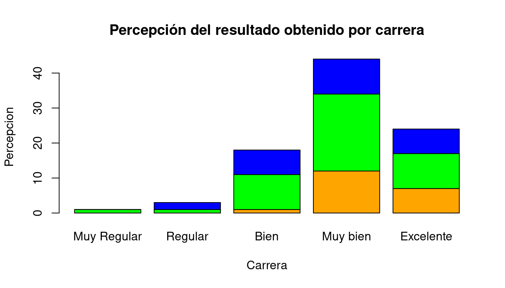
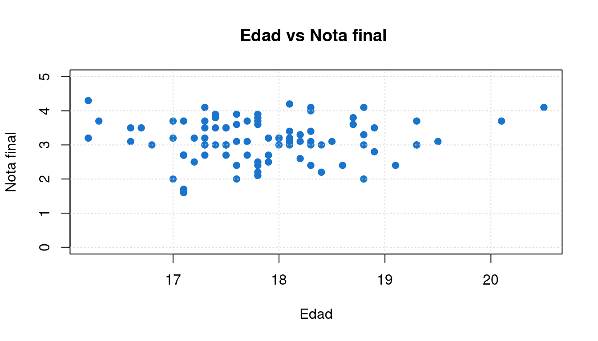

library(plotly)## Loading required package: ggplot2##
## Attaching package: 'plotly'## The following object is masked from 'package:ggplot2':
##
## last_plot## The following object is masked from 'package:stats':
##
## filter## The following object is masked from 'package:graphics':
##
## layoutserie_0 <- rnorm(15, mean = 3.5)
serie_1 <- rnorm(15, mean = 3.6)
serie_2 <- rnorm(15, mean = 3.7)
t <- c(1:15)
data <- data.frame(t, serie_0, serie_1, serie_2)
p3= plot_ly(data, x = ~t)
p3= p3 %>% add_trace(y = ~serie_0, name = 'serie 0', mode = 'lines')
p3= p3 %>% add_trace(y = ~serie_1, name = 'serie 1', mode = 'lines+markers')
p3= p3 %>% add_trace(y = ~serie_2, name = 'serie 2', mode = 'markers')
p3= p3 %>% layout(title = "Comparacion de resultados ultimos 2 meses",
xaxis = list(title = "periodo"),
yaxis = list(title="indicadores"))
p3## No trace type specified:
## Based on info supplied, a 'scatter' trace seems appropriate.
## Read more about this trace type -> https://plot.ly/r/reference/#scatter## Warning: `arrange_()` is deprecated as of dplyr 0.7.0.
## Please use `arrange()` instead.
## See vignette('programming') for more help
## This warning is displayed once every 8 hours.
## Call `lifecycle::last_warnings()` to see where this warning was generated.## No trace type specified:
## Based on info supplied, a 'scatter' trace seems appropriate.
## Read more about this trace type -> https://plot.ly/r/reference/#scatter## No trace type specified:
## Based on info supplied, a 'scatter' trace seems appropriate.
## Read more about this trace type -> https://plot.ly/r/reference/#scatterlibrary(ggplot2)
library(plotly)
# datos de estudiantes que cursaron Matemáticas Fundamentales
cc=c(20, 10, 20, 20, 20, 20, 20, 20, 20, 30, 20, 20, 20, 10, 30, 20, 20, 30, 20,
30, 30, 20, 10, 30, 20, 20, 30, 30, 10, 20, 10, 20, 20, 20, 10, 20, 10, 20,
20, 30, 30, 30, 10, 30, 20, 20, 20, 20, 20, 20, 10, 20, 30, 30, 10, 10, 10,
20, 10, 20, 10, 30, 20, 10, 20, 30, 10, 30, 30, 30, 20, 30, 30, 30, 30, 30,
30, 20, 10, 30, 10, 20, 20, 10, 20, 20, 20, 20, 10, 20)
labs=c("Ing. Industrial","Administración ","Contaduría ")
nf=c(4.1, 2.7, 3.1, 3.2, 3.0, 3.2, 2.0, 2.4, 1.6, 3.2, 3.1, 2.6, 2.0, 2.4, 2.8,
3.3, 4.0, 3.4, 3.0, 3.1, 2.7, 2.7, 3.0, 3.8, 3.2, 2.2, 3.5, 3.5, 3.8, 3.5,
3.9, 4.2, 4.3, 3.9, 3.2, 3.5, 3.5, 3.7, 4.1, 3.7, 3.5, 3.6, 3.2, 3.1, 3.4,
3.0, 3.0, 3.0, 2.7, 1.7, 3.6, 2.1, 2.4, 3.0, 3.1, 2.5, 2.5, 3.6, 2.2, 2.4,
3.1, 3.3, 2.7, 3.7, 3.0, 2.7, 3.0, 3.2, 3.1, 2.4, 3.0, 2.7, 2.5, 3.0, 3.0,
3.0, 3.2, 3.1, 3.8, 4.1, 3.7, 3.5, 3.0, 3.7, 3.7, 4.1, 3.7, 3.9, 3.7, 2.0)
op=c(3, 4, 4, 3, 4, 4, 5, 5, 4, 5, 4, 3, 4, 5, 5, 4, 3, 3, 2, 3, 3, 3, 4, 5, 5,
3, 2, 5, 4, 3, 4, 4, 4, 4, 5, 5, 5, 3, 5, 4, 3, 4, 4, 4, 5, 5, 4, 3, 5, 4,
4, 4, 4, 4, 4, 4, 3, 4, 4, 4, 5, 3, 4, 4, 4, 4, 4, 2, 3, 5, 4, 3, 5, 4, 4,
4, 4, 5, 5, 5, 4, 4, 4, 5, 1, 4, 5, 3, 5, 4)
t3=table(cc,op)
rownames(t3)=c("Ing. Industrial","Administración ","Contaduría ")
colnames(t3)=c("Muy Regular","Regular","Bien","Muy bien","Excelente")
barplot(t3, main="Percepción del resultado obtenido por carrera",
xlab="Carrera",
ylab="Percepcion", col=c("orange","green","blue"))
# Diagrama de puntos
ed=round(rnorm(90,18,1),1) # se genera la variable numérica edad
plot(ed,nf,
main="Edad vs Nota final ",
ylim = c(0,5),
xlab = "Edad",
ylab = "Nota final",
col="dodgerblue3",pch=19)
grid()